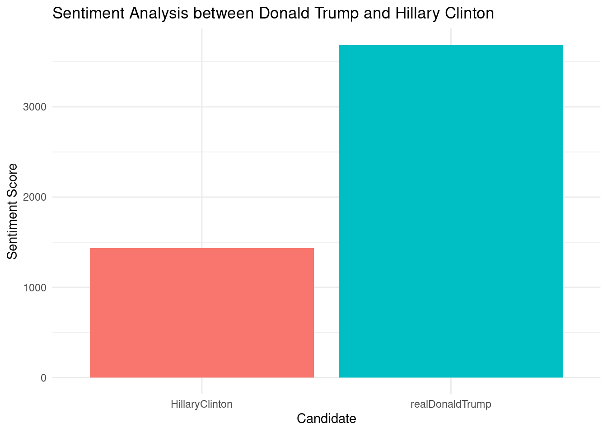
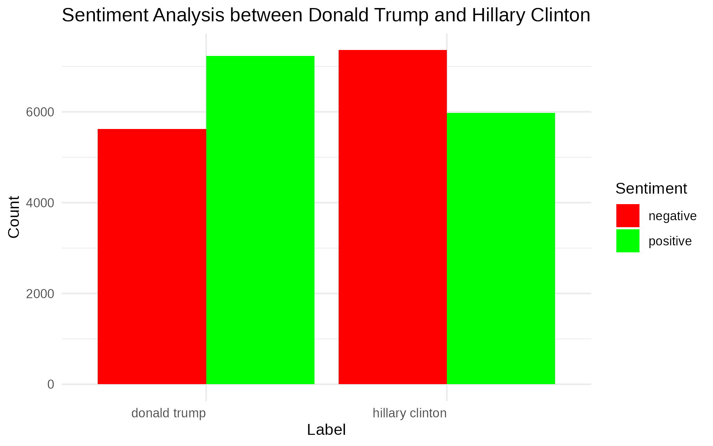

This task has two parts.
In the first part, we will use a dataset called tweets.csv that contains tweets and comments from Donald Trump and Hillary Clinton. We will analyze the sentiments in these tweets and comments. We will categorize the tweets and comments as positive, negative, or neutral and create visualizations to show the results.
In the second part, we will collect 40 journal articles about the sentiments around Hillary Clinton and Donald Trump. Then, we will analyze these articles to understand how sentiment analysis was used and what trends were found in public opinion. Here’s the folder containing all of those collected articles that published to Google Scholar: PDF folder
# Load required libraries
library(readr)
library(dplyr)
library(stringr)
library(tidytext)
library(ggplot2)# Read the CSV file
tweets <- read_csv("./resources/tweets.csv")# Data cleaning and preprocessing
tweets <- tweets %>%
mutate(text = str_replace_all(text, "https?://\\S+", "")) %>% # Remove URLs
mutate(text = str_replace_all(text, "@\\w+", "")) %>% # Remove mentions
mutate(text = str_replace_all(text, "#\\w+", "")) %>% # Remove hashtags
mutate(text = str_replace_all(text, "[^[:alnum:][:space:]]+", "")) %>% # Remove special characters
mutate(text = str_trim(text)) %>% # Trim whitespace
filter(!is.na(text) & text != "") # Remove empty/NA rows# Tokenize text data
tweets_tokens <- tweets %>%
unnest_tokens(word, text)# Perform sentiment analysis
sentiment_scores <- tweets_tokens %>%
inner_join(get_sentiments("afinn"), by = "word") %>%
group_by(handle) %>%
summarize(sentiment_score = sum(value))# Plot sentiment analysis graph
ggplot(sentiment_scores, aes(x = handle, y = sentiment_score, fill = handle)) +
geom_bar(stat = "identity") +
labs(title = "Sentiment Analysis between Donald Trump and Hillary Clinton",
x = "Candidate",
y = "Sentiment Score") +
theme_minimal() +
theme(legend.position = "none")
# Load necessary libraries
library(rvest)
library(httr)
library(tools)# Function to scrape Google Scholar and download PDF files
scrape_google_scholar <- function(query, pages, output_dir) {
# Create output directories if they do not exist
if (!dir.exists(output_dir)) {
dir.create(output_dir, recursive = TRUE)
}
# File to store metadata
metadata_file <- file.path(output_dir, "pdf_metadata.csv")
# Initialize metadata storage
metadata <- data.frame(Link = character(), Title = character(), stringsAsFactors = FALSE)
# List to track downloaded PDF links
downloaded_links <- c()
file_counter <- 1
# Loop through each page
for (i in seq(0, (pages - 1) * 10, by = 10)) {
# Construct the URL
url <- paste0("https://scholar.google.com/scholar?start=", i, "&q=", query, "&hl=en&as_sdt=0,5")
# Read the page content
page <- read_html(url)
# Extract PDF links
links <- page %>% html_nodes("a") %>% html_attr("href")
# Filter PDF links
pdf_links <- links[grepl("\\.pdf$", links)]
# Download each PDF if not already downloaded
for (pdf_link in pdf_links) {
if (!(pdf_link %in% downloaded_links)) {
safe_name <- as.character(file_counter)
pdf_file <- file.path(output_dir, paste0(safe_name, ".pdf"))
tryCatch({
download.file(pdf_link, pdf_file, mode = "wb")
# Append metadata
metadata <- rbind(metadata, data.frame(Link = pdf_link, Title = safe_name, stringsAsFactors = FALSE))
downloaded_links <- c(downloaded_links, pdf_link)
file_counter <- file_counter + 1
}, error = function(e) {
message("Failed to download ", pdf_link, ": ", e)
})
} else {
message("Skipping already downloaded PDF: ", pdf_link)
}
}
}
# Write metadata to CSV
write.csv(metadata, metadata_file, row.names = FALSE)
}# Run the function
# scrape_google_scholar("donald+trump", 20, "resources/pdf/donald+trump")# Run the function
# scrape_google_scholar("hillary+clinton", 20, "resources/pdf/hillary+clinton")We collected 40 Journal/Article PDFs about Donald Trump and Hillary Clinton
pdf/
└── donald+trump/
├── <filename_1>.pdf
├── <filename_2>.pdf
├── ...
└── hillary+clinton/
├── <filename_1>.pdf
├── <filename_2>.pdf
├── ...The full collected pdf is available here
# Load required libraries
library(tidyverse)
library(pdftools)
library(tidytext)
library(ggplot2)# Set directory containing PDFs
pdf_dir <- "resources/pdf"
# List all PDF files in the directory
pdf_files <- list.files(pdf_dir, full.names = TRUE)
# Read the PDF files into a data frame
text_data <- lapply(pdf_files, function(file) {
tryCatch(
{
pdf_text(file)
},
error = function(e) {
warning(paste("Error reading file:", file))
return(NA)
}
)
}) %>%
unlist() %>%
na.omit() %>%
data.frame(text = .)# Function to clean text data
clean_text <- function(text) {
# Convert to lowercase
text <- tolower(text)
# Remove punctuation
text <- gsub("[[:punct:]]", " ", text)
# Remove numbers
text <- gsub("[[:digit:]]", "", text)
# Remove extra white spaces
text <- gsub("\\s+", " ", text)
# Remove stop words
text <- removeWords(text, stopwords("en"))
return(text)
}
# Apply text cleaning function to the text data
text_data <- text_data %>%
mutate(cleaned_text = map_chr(text, clean_text))# Perform sentiment analysis for each candidate
sentiment_analysis <- text_data %>%
mutate(candidate = case_when(
str_detect(cleaned_text, "donald trump") ~ "Trump",
str_detect(cleaned_text, "hillary clinton") ~ "Clinton",
TRUE ~ "Other"
)) %>%
filter(candidate != "Other") %>%
unnest_tokens(word, cleaned_text) %>%
inner_join(get_sentiments("bing"), by = c("word" = "word")) %>%
group_by(candidate) %>%
summarise(sentiment_score = sum(sentiment == "positive") - sum(sentiment == "negative"))# Plotting the sentiment analysis results
ggplot(sentiment_analysis, aes(x = candidate, y = sentiment_score, fill = candidate)) +
geom_bar(stat = "identity") +
labs(x = "Candidate", y = "Sentiment Score", title = "Sentiment Analysis for Trump vs Clinton") +
theme_minimal() +
scale_fill_manual(values = c("Trump" = "red", "Clinton" = "blue")) +
geom_text(aes(label = sentiment_score), vjust = -0.5)
The first bar chart shows the sentiment analysis scores for tweets mentioning Donald Trump and Hillary Clinton.
The second bar chart compares the sentiment from journal articles for both candidates.
Amanda, C. S. (2017). AN ANALYSIS OF THE USE OF WOMEN’S LANGUAGE FEATURES BY HILLARY CLINTON IN PRESIDENTIAL DEBATES. (Skripsi Sarjana, Universitas Sanata Dharma Yogyakarta)
ASWAD, N. G. (2018). Exploring Charismatic Leadership: A Comparative Analysis of the Rhetoric of Hillary Clinton and Donald Trump in the 2016 Presidential Election. Presidential Studies Quarterly
Auxier, R., Burman, L., Nunns, J., & Rohaly, J. (2016). AN ANALYSIS OF HILLARY CLINTON’S TAX PROPOSALS. TAX POLICY CENTER | URBAN INSTITUTE & BROOKINGS INSTITUTION
Brigitte L. Nacos, Robert Y. Shapiro, and Yaeli Bloch-Elkon. (2020). Donald Trump: Aggressive Rhetoric and Political Violence. PERSPECTIVES ON TERRORISM: Volume 14, Issue 5
CATHERINE Y. KIM. et al. (2017). BRIEF OF AMICI CURIAE PROFESSORS OF FEDERAL COURTS JURISPRUDENCE, CONSTITUTIONAL LAW, AND IMMIGRATION LAW IN SUPPORT OF RESPONDENTS. Wilson-Epes Printing Co
Clebanov, V. & Kravitz, B. (2018). Gaze of the Medusa: The Defeat of Hillary Clinton. Athens Journal of Humanities & Arts
Dan P. McAdams. (2016). THE MIND OF DONALD TRUMP. The Atlantic Journal
Donald J. Trump, McIver. M. (2006). Trump 101: The Way to Success.
D. N. Smith, Hanley. E. (2018). The Anger Games: Who Voted for Donald Trump in the 2016 Election, and Why?. Critical Sociology 2018, Vol. 44(2) 195–212
Fea. J. (2018). Believe Me: The Evangelical Road to Donald Trump. (p. 76-85). William B Eerdmans Publishing Company.
Hapsari, N. (2017). FRAMING WOMEN POLITICIAN IN DEMOCRATIC ENVIRONMENT: A STUDY OF MEGAWATI SOEKARNO PUTRI AND HILLARY CLINTON. RUBIKON: Journal of Transnational American Studies
Hochschild. A. R. (2016). The Ecstatic Edge of Politics: Sociology and Donald Trump. American Sociological Association
Jackson, N. (2016). HuffPost Forecasts Hillary Clinton Will Win With 323 Electoral Votes. HuffPost
Jonathan Rothwell. (2016). Explaining nationalist political views: The case of Donald Trump. Draft Working Paper
Jones, J. J. (2015). “Talk like a man” The linguistic appeal of Hillary Rodham Clinton. Western Political Science Association
Kanwal, S. & Garcia, M. I. M. (2019). Representation of Gender Through Framing: A Critical Discourse Analysis of Hillary Clinton’s Selected Speeches. International Journal of English Linguistics
Lakoff. G (2016). Why Trump? Political
Mariani, M., Marshall, M. W., & Mathews-Schultz, A. L. (2015). See Hillary Clinton, Nancy Pelosi, and Sarah Palin Run? Party, Ideology, and the Influence of Female Role Models on Young Women. Political Research Quarterly
Mark Setzler, Alixandra B. Yanus. (2018). Why Did Women Vote for Donald Trump?. American Political Science Association
Mayer, W. G. (2018). WAS THE PROCESS TO BLAME? WHY HILLARY CLINTON AND DONALD TRUMP WON THEIR PARTIES’ PRESIDENTIAL NOMINATIONS. New York University Law Review
Michael Clarke & Anthony Ricketts. (2017). Donald Trump and American foreign policy: The return of the Jacksonian tradition, Comparative Strategy, 36:4, 366-379, DOI: 10.1080/01495933.2017.1361210
Mueller, J. (2008). Tag Teaming the Press - How Bill and Hillary Clinton Work Together to Handle the Media. Rowman & Littlefield Publishers, Inc.
Oles-Acevedo, D. (2012). Fixing the Hillary Factor: Examining the Trajectory of Hillary Clinton’s Image Repair from Political Bumbler to Political Powerhouse. American Communication Journal
Opstaele, S. (2008). Hillary Clinton vs. Barack Obama A linguistic study of appraisal in political speeches. University of Ghent
Peter Dombrowski, Simon Reich, Does Donald Trump have a grand strategy?, International Affairs, Volume 93, Issue 5, September 2017, Pages 1013–1037, https://doi.org/10.1093/ia/iix161
RAVIN, Y. & KAZI, Z. (1999). Is Hillary Rodham Clinton the President? Disambiguating Names across Documents. ACL Anthology
Remnick, D. (2017). Hillary Clinton Looks Back in Anger - She talks about Trump, Comey, collusion, “deplorables,” and the power of sexism. The New Yorker
Sara Ahmadian, Sara Azarshahi, Delroy L. (2017). Explaining Donald Trump via communication style: Grandiosity, informality, and dynamism. Personality and Individual Differences 107 (2017) 49–53
Sharrow, E. A., Strolovitch, D. Z., Heaney, M. T., Masket, S. E., & Miller, J. M. (2016). Gender Attitudes, Gendered Partisanship: Feminism and Support for Sarah Palin and Hillary Clinton among Party Activists, Journal of Women, Politics & Policy
Smith, S. (2012). “America’s Exhibit A”: Hillary Rodham Clinton’s Living History and the Genres of Authenticity. American Literary History
Topic, M. & Gilmer, E. (2017). Hillary Clinton and the Media: From Expected Roles to the Critique of Feminism. The Qualitative Report
Winter, N. (2000). Gendered and Re-gendered: Public Opinion and Hillary Rodham Clinton. University of Michigan
The White House Office of the Press Secretary. (2017). Presidential Executive Order on Assessing and Strengthening the Manufacturing and Defense Industrial Base and Supply Chain Resiliency of the United States.
James P. Pfiffner. (2021). Donald Trump and the Norms of the Presidency. George Mason University
Lucian G. C, Meredith A. R, Shannon C. (2017). Donald Trump as a Cultural Revolt Against Perceived Communication Restriction: Priming Political Correctness Norms Causes More Trump Support. Original Research Reports
Kevin Arceneaux and Rory Truex. (2022). Donald Trump and the Lie. Cambridge University Press
Daniel W. Drezner. (2020). Donald Trump and the American presidency. International Affairs 96:2 (383-400)
Michele F. Margolis. (2020). Who Wants to Make America Great Again? Understanding Evangelical Support for Donald Trump. Politics and Religion, 13 (2020), 89–118